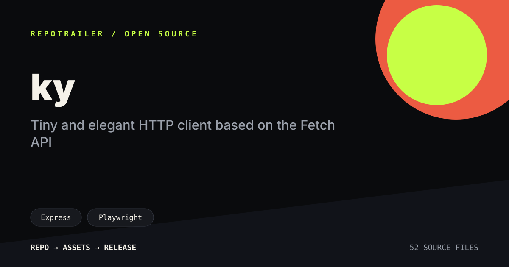
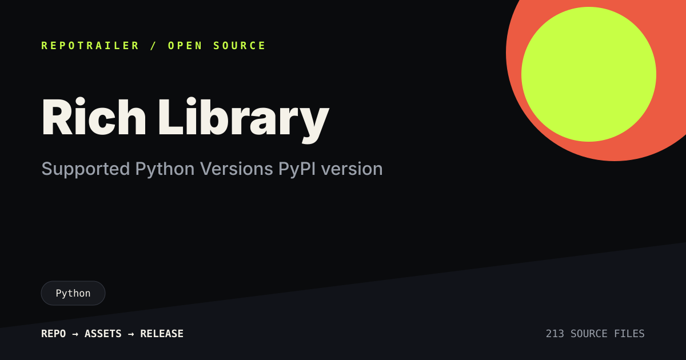
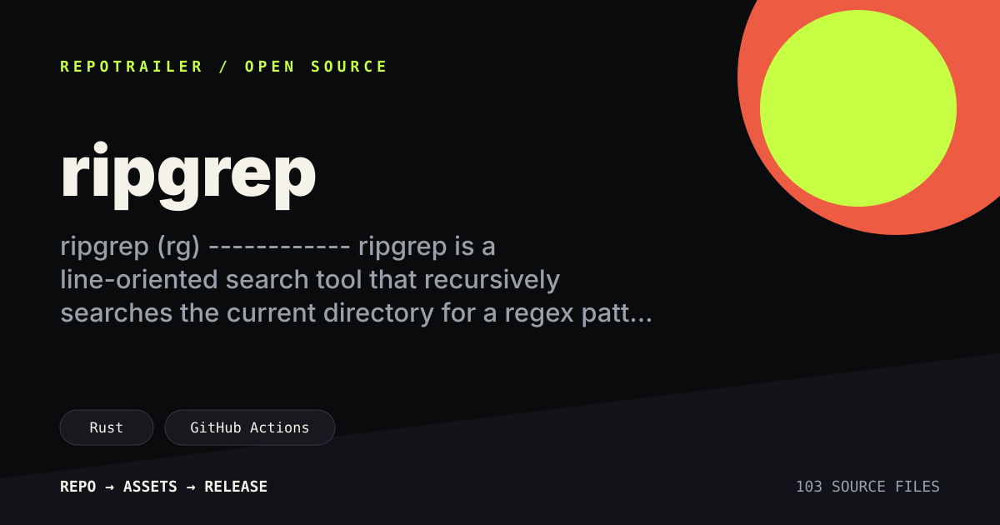

ky
TypeScript library with a concise API story.
RepoTrailer reads a repository and generates a browser preview, social card, launch copy, JSON storyboard, editable HyperFrames composition, and optional MP4 trailer.
npx --yes --package=github:howong217-ui/repotrailer \
repotrailer owner/repo --no-video
# Outputs:
# index.html
# social-card.svg
# launch-copy.md
# repotrailer.json
# hyperframes/These cards were generated with the static path. They avoid invented stars, downloads, benchmarks, and endorsement claims.

TypeScript library with a concise API story.

Python project with visual terminal output.

CLI tool with a strong installation beat.